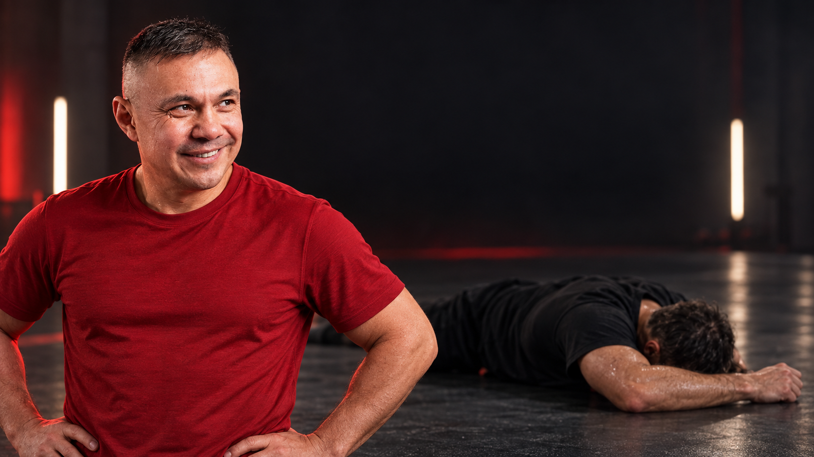
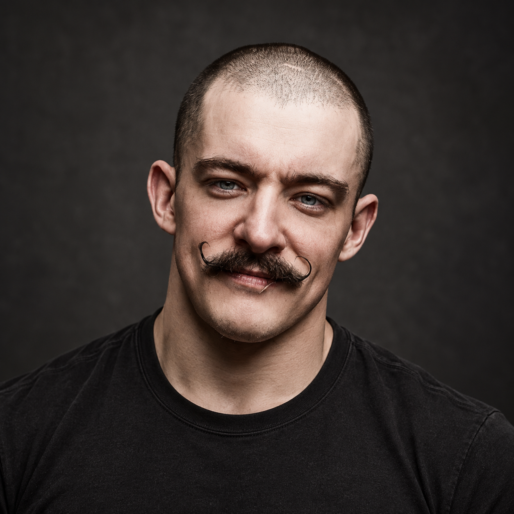
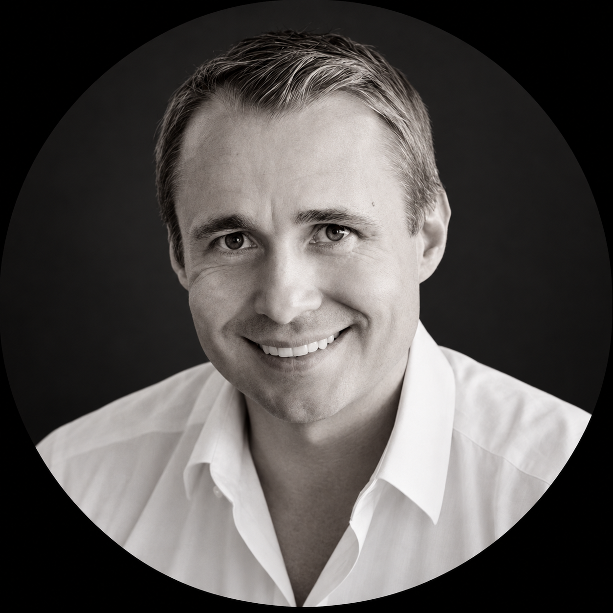
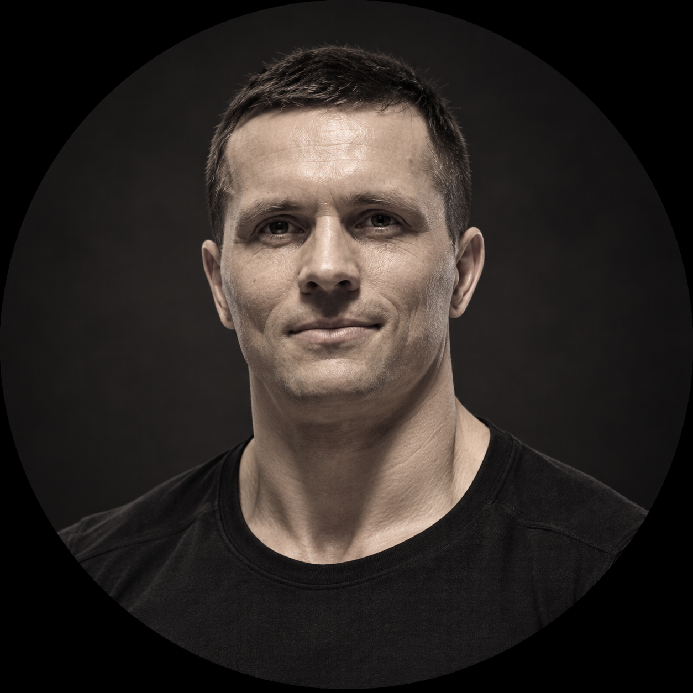
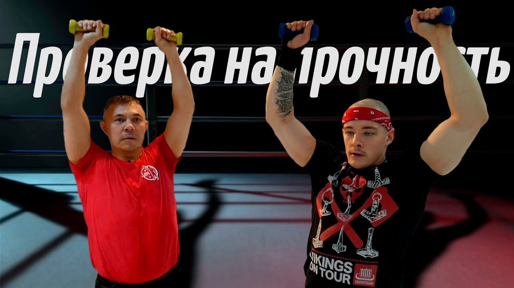
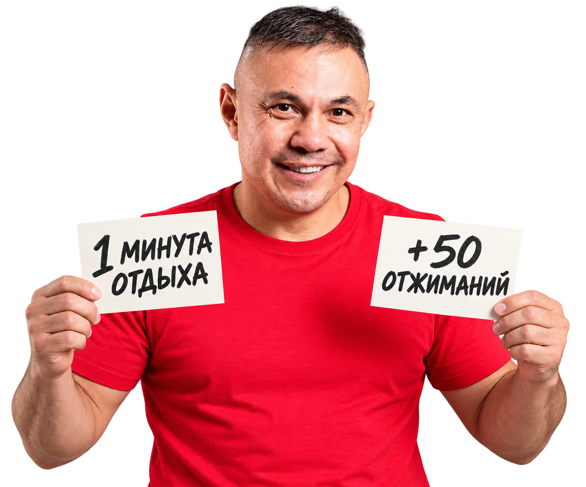
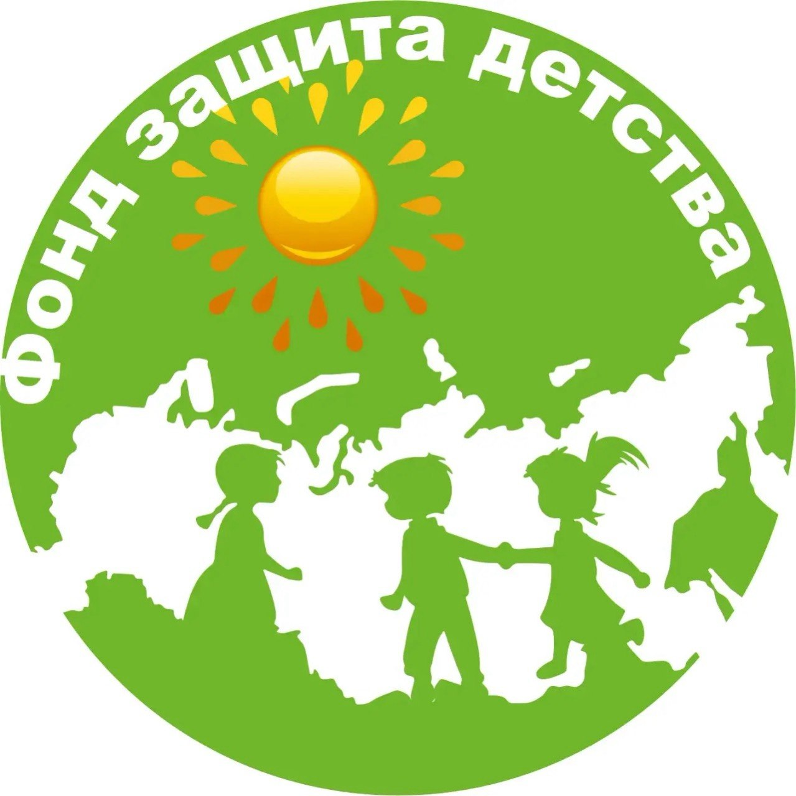

Короче и насыщеннее
Вместо почти часовых эпизодов: больше упражнений, реакций и неожиданных ситуаций.

Перезагрузка
В 2019 году на канале Kostya Tszyu мы запустили формат «Проверка на прочность». Задумка была простой: мы приглашали гостя и проводили с ним тренировку, которую он должен был выдержать до конца.
Первый сезон состоял из 7 выпусков и в общем набрал более 7 миллионов просмотров.




Настало время второго сезона.
Костя по-прежнему приглашает гостя на тренировку на выносливость. Но теперь выпуск устроен иначе.
Вместо почти часовых эпизодов: больше упражнений, реакций и неожиданных ситуаций.
Вопросы и решения гостя меняют нагрузку прямо во время тренировки.

Полный выпуск остаётся основой проекта. Но сегодня недостаточно просто снять один длинный ролик.
Поэтому съёмка и монтаж сразу закладываются так, чтобы из материала получалось как можно больше отдельных вертикальных видео.
Нарезки, эдиты — авторские пользовательские монтажи — и другие короткие форматы смогут распространяться отдельно и приводить новую аудиторию к полному выпуску.
Короткие видео — не единственное, что мы используем для распространения выпусков.
Перед выходом каждого выпуска мы договариваемся о поддержке со спортивными медиа, блогерами и тематическими сообществами.
В день публикации они создают первую волну упоминаний, переходов и просмотров.
Так выпуск получает первую аудиторию с первых часов, а не рассчитывает только на органический интерес.
Привлекать молодую аудиторию к спорту и активному образу жизни.
Знакомить зрителей с характером, дисциплиной и личными историями спортсменов.

Социальный партнёр проектаФонд «Защита детства»
Ваш продукт или компания могут стать частью проекта рядом с Костей Цзю и его гостями — спортсменами и известными людьми, которых аудитория уже знает и уважает.
Продукт или компания становятся частью задания, подготовки или разговора с гостем. Интеграцию продумываем под конкретный выпуск.
Рекламное сообщение появляется в начале, внутри или в финале конкретного выпуска. Место и хронометраж согласуем до съёмки.
Ваш продукт или компания становятся постоянной частью сезона: появляются рядом с Костей и гостями в основных выпусках, коротких видео и материалах запуска.
Мы не берём любые размещения. Рассматриваем компании с прозрачной репутацией и продуктами, уместными для проекта.
Александр Лактионов
+7 985 778 32 05
Косте низкий поклон! Жду следующую проверку
Когда новый выпуск??
Неужели вы забросили этот формат?
Пожалуйста вернитесь 😭